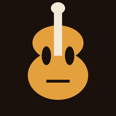

Musician Practice Alarm
An Android app that reminds you to practice your instrument, and gets more annoying until you play.
Install on Android
Download the app- Tap Download, then open the file when it finishes.
- If Android asks, allow your browser to install unknown apps, then tap Install.
- Open Musician Practice Alarm, answer the three questions, and allow notifications and the microphone.
Android may warn that the app comes from outside the Play Store. That is expected for this app. It is not available for iPhone.
How it works
You pick a practice time. Reminders start then and come faster each time, even with your phone locked. At first you can tap "I played" on your honor. If you skip too many days, that button disappears and the microphone has to hear you play for 5 minutes.